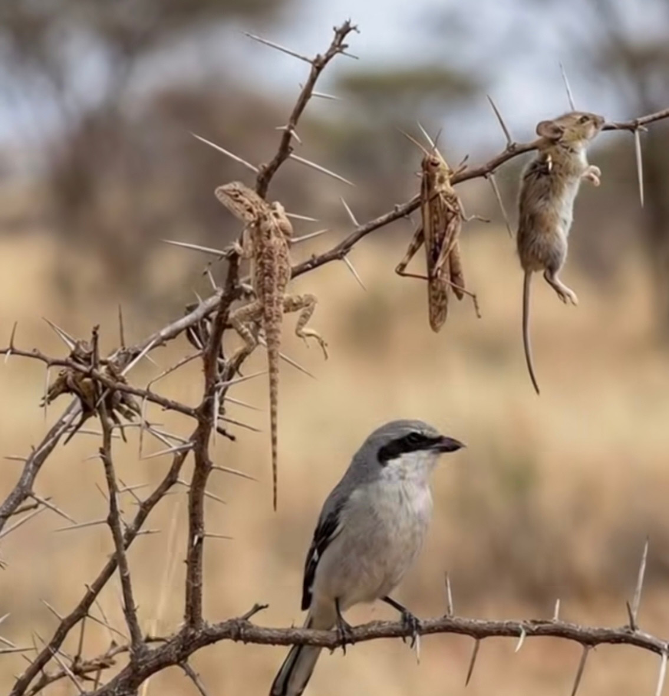
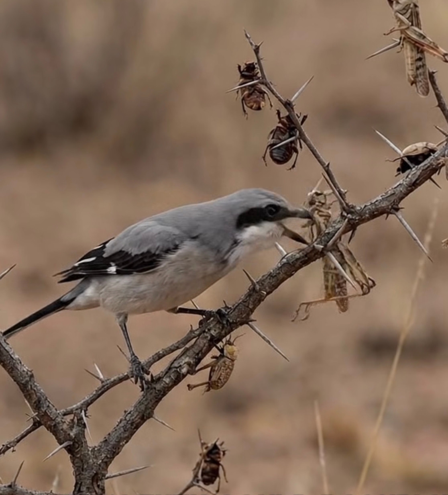
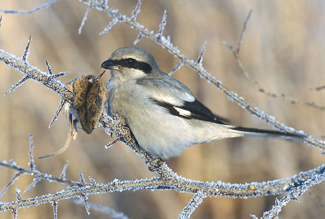

طائر صغير يحوّل الأشواك إلى أدوات لتثبيت الفرائس ومخازن للطعام. كيف يفعل الصرد ذلك، وأين نراه في البلاد العربية؟
غصن شائك، وفأر معلّق، وطائر صغير بقناع أسود يقف على مقربة. مشهد يشبه مشنقة في البرية، وصاحبه لا يحتاج إلى حجم نسر أو مخالب صقر ليصنعه. إنه الصرد، الطائر الذي يحوّل الشوكة إلى أداة لتثبيت فرائسه ومائدة طعام، وقد يجعل من أغصان شجيرة واحدة مخزنًا لوجبات يعود إليها لاحقًا.
من بعيد، يبدو مجرد طائر رمادي هادئ فوق غصن مرتفع. لكن تلك الوقفة هي موقع مراقبة. عيناه تتبعان الحركة على الأرض، ومنقاره المعقوف جاهز للانقضاض على حشرة كبيرة أو سحلية أو قارض صغير. وعندما تصبح الفريسة بين يديه، أو بالأحرى بين منقاره وقدميه، تدخل الأشواك في الحكاية.

الشوكة التي تعمل بدل المخلب
ينتمي الصرد إلى العصفوريات، لكنه يعيش حياة مفترس. ولأنه لا يملك مخالب الجوارح القوية، يستعين بما توفره البيئة: شوكة حادة، سلك شائك، أو شق بين غصنين. يثبّت فريسته، ثم يستخدم منقاره لتمزيقها واقتطاع الطعام منها.
هكذا تصبح الشوكة امتدادًا لأدواته الطبيعية؛ تمسك ما يصعب تثبيته، وتتيح له التعامل مع فرائس كبيرة قياسًا بحجمه. وقد يبقى جزء من الفريسة في مكانه ليعود إليه، أو يعلّق فائض ما اصطاده بدل تناوله فورًا.
وراء هذا المشهد القاسي إذن أكثر من وظيفة: السيطرة على الطعام، وتسهيل تناوله، والاحتفاظ به. وقد تجد على أغصان منطقة الصرد حشرات وفقاريات صغيرة، كأن الطائر ترك سجلًا مكشوفًا لنجاحه في الصيد.

حين يصبح مخزن الطعام إعلانًا
للقصة تفصيل آخر يضيف إلى غرابتها. في دراسة على الصرد الرمادي الكبير في بولندا، وجد الباحثون أن الذكور تختار خلال موسم التزاوج مواضع أكثر ظهورًا لتعليق الفرائس. يشير ذلك إلى أن المخزون قد يؤدي دورًا اجتماعيًا أيضًا: الطعام الذي يملكه الطائر يمكن أن يُرى، وربما يحمل رسالة إلى شريك محتمل أو منافس.
إنها براعة في استثمار المكان. الشجيرة تؤمّن مجثمًا للمراقبة، وأداة لتثبيت الفريسة، ومستودعًا للطعام، وأحيانًا واجهة لعرضه.
ومن بين أنواع الصرد التي تعرف هذا السلوك، يبرز الصرد الرمادي الكبير بوصفه طائرًا حاضرًا في أجزاء واسعة من العالم العربي؛ تراه جماعات مقيمة في بعض البلدان، وتصل جماعات أخرى مع الهجرة والشتاء.
بطاقة التعريف
• الاسم العربي: الصرد الرمادي الكبير.
• الاسم الإنجليزي: Great Grey Shrike.
• الاسم الفرنسي: Pie-grièche grise.
• الاسم العلمي: Lanius excubitor.
• الفصيلة: الصرديات Laniidae.
• الرتبة: العصفوريات Passeriformes.
• الطول: نحو 24–25 سنتيمترًا.
• الوزن: نحو 48–81 غرامًا وفق مرجع طيور السعودية، مع اختلاف الجماعات.
• أبرز العلامات: ظهر رمادي، قناع أسود يمر عبر العين، ذيل طويل وأجنحة بالأسود والأبيض، ومنقار معقوف الطرف.
• الغذاء: حشرات كبيرة، وسحالي وقوارض وطيور صغيرة.
• الحالة العالمية: أقل إثارة للقلق، بحسب التصنيف العالمي المشار إليه في المراجع؛ وهذه الحالة لا تعني أن أعداده لا تتراجع أو أن جميع جماعاته متساوية في الوفرة.
أين نراه في البلاد العربية؟ — في المغرب العربي
تعيش جماعات محلية مقيمة في المغرب والجزائر وتونس، بما يشمل بيئات شمالية وأخرى صحراوية وواحات. وتوجد جماعات مقيمة في ليبيا أيضًا. لذلك يمكن لقاء الصرد في موائله المناسبة خلال العام، وليس في موسم عبور قصير فقط.
تختلف ألوان هذه الجماعات ودرجات الرمادي والبياض فيها. وما تذكره بعض المراجع القديمة تحت اسم «الصرد الجنوبي» أُعيد تصنيفه؛ تعتمد هذه المادة تصنيف AviList لعام 2026، الذي يضم الجماعات المعنية في شمال أفريقيا والجزيرة العربية وصرد السهوب ضمن الصرد الرمادي الكبير Lanius excubitor.
في مصر
له وجود مقيم متكاثر موثق، ومن أمثلته جبل علبة وجبال البحر الأحمر. وفي الصحراء الغربية وُثق تثبيته الفرائس على أشواك العوسج والأسلاك الشائكة. إن مشهد «المشنقة» الذي يشد الانتباه ليس حكاية بعيدة عن بيئاتنا.
في السعودية والخليج
في السعودية، الصرد الرمادي الكبير مقيم متكاثر واسع الانتشار، مع وصول جماعات أخرى عابرة أو شتوية. ويصف كتاب «طيور السعودية» استخدامه أشواك الأكاسيا لتعليق الفرائس في وسط المملكة وغربها.
في الإمارات وقطر وعُمان، توجد جماعات عربية مقيمة متكاثرة، وتضاف إليها جماعات من صرد السهوب أثناء الهجرة أو الشتاء. وفي الإمارات تحديدًا، يمتد عبور الخريف عمومًا بين أغسطس وأكتوبر، وعبور الربيع بين مارس وأبريل، مع بقاء بعض الأفراد شتاءً. أما الطيور المقيمة فيمكن مشاهدتها طوال العام.
الكويت تختلف: تُصنَّف جماعة صرد السهوب فيها عابرًا وزائرًا شتويًا غير شائع، فيما تُعد الجماعة العربية المقيمة في بلدان مجاورة شاردة في القائمة الكويتية. ليس لكل الخليج إذن جدول حضور واحد.
في المشرق
في الأردن يُدرج الصرد الرمادي الكبير ضمن الطيور المقيمة. وفي سوريا تتنوع حالته بحسب الجماعة والمنطقة، بين تكاثر محلي نادر وزيارة شتوية وعبور.
أما لبنان، فتذكر قائمة الطيور المنشورة عام 2020 تكاثرًا تاريخيًا، لكنها لم تجد دليلًا حديثًا حاسمًا عليه وقت إعدادها. وتوثق عبورًا قليلًا أو نادرًا في أكتوبر حتى منتصف نوفمبر، وعبورًا نادرًا جدًا من أوائل مارس إلى أوائل أبريل. لذلك، لا يُقدَّم بوصفه مقيمًا شائعًا حاليًا في لبنان.
أين نبحث عنه في الميدان؟
ابحث عن مشهد مفتوح تتخلله شجيرات أو أشجار متناثرة: أرض زراعية، أطراف واحات، بيئات شبه صحراوية، أو مساحات فيها نباتات شوكية ومجاثم تكشف الأرض. كثيرًا ما يكون أول ما تلاحظه وقفته المكشوفة فوق غصن أو سلك، ثم القناع الأسود والذيل الطويل.
قد يشبه أنواعًا أخرى من الصرد الرمادي؛ لذلك تفيد صورة واضحة للرأس والجناح والذيل، مع معرفة مكان المشاهدة وتاريخها. اختلاف درجات اللون لا يعني بالضرورة أننا أمام نوع مختلف؛ للعمر والجماعة المحلية دور أيضًا.
العش والعائلة
يبني الصرد عشًا كأسيًا في شجرة أو شجيرة، مستخدمًا الأغصان والأعشاب والجذيرات، ويبطّنه بمواد أنعم. تحضن الأنثى البيض أساسًا، ويشارك الأبوان في رعاية الصغار.
تذكر المراجع السعودية والإماراتية عادةً 3–4 بيضات، وقد يزيد العدد. وتستغرق الحضانة قرابة 15–17 يومًا، ثم تغادر الفراخ العش بعد نحو أسبوعين ونصف. يختلف توقيت التكاثر بين المناطق؛ ففي الإمارات تبرز الفترة من مارس إلى مايو، وقد يبدأ النشاط أبكر.
ولحماية هذا الطائر، تبقى الشجيرات والأشجار المتناثرة جزءًا مهمًا من موطنه. أما من يصوّره أو يراقبه، فالأفضل أن يترك فرائسه المعلقة في مكانها وألا يقترب من العش أو يغيّر ترتيب المشهد من أجل صورة.
قد تغادر المكان ويبقى الفأر على الشوكة. بالنسبة إلى العابر، صورة صادمة؛ وبالنسبة إلى الصرد، جزء من نظام حياة يعرف فيه كيف يحوّل غصنًا صغيرًا إلى أداة تمنحه قدرة أكبر من حجمه.
المراجع: The Birds of Saudi Arabia، المجلد الثاني، ص 252؛ Antczak وHromada وTryjanowski (2012)، دراسة تعليق الفرائس لدى الصرد؛ Hegazi (1981)، غذاء الطيور في الصحراء الغربية المصرية؛ Goodman وAbdel Mowla Atta (1987)، The Birds of Southeastern Egypt؛ Ramadan-Jaradi وآخرون (2020)، قائمة طيور لبنان؛ Aidek وآخرون (2025)، قائمة طيور سوريا؛ قائمتا Jordan BirdWatch وطيور الكويت؛ التقييم الوطني الإماراتي؛ AviList v2026.
الصورة الثالثة: Marek Szczepanek / Wikimedia Commons، CC BY-SA 3.0؛ تصحيح لوني سابق: MPF. · 1 · https://creativecommons.org/licenses/by-sa/3.0/


.jpg){kind=link}